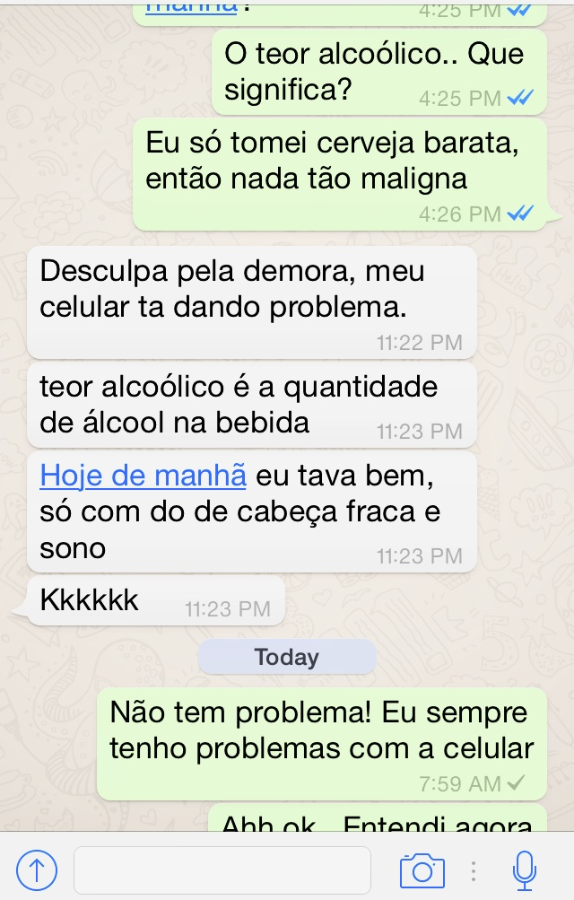

The corpus for this project is being gathered from screen shots sent to the reasearchers from participants within the conversations themselves. Since the texting is being done between two students, the easiest and most efficient method for the documentation of the discourse is to transcribe the screen shots. We have many images that will be/have been transcribed so as to make the text more accessible.
We'll include a picture or two to show what sort of text we were originally dealing with.
